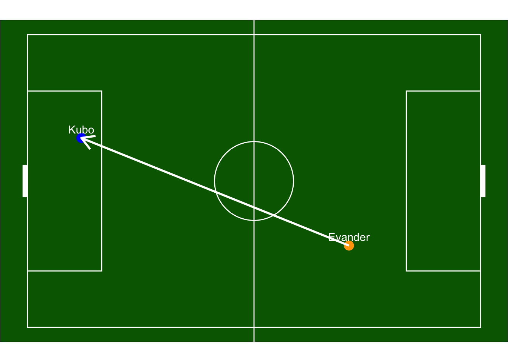

FC Cincinnati Over the last 3 games (midterms happened!)
Im back!
First and foremost, I had midterms over the last couple of weeks and could not clear time to create reports for the last few games. But really, besides the Toronto win, there haven’t been too many great things to report, sadly. This first report back will not be as analytical graphics-wise, as I am still currently trying to find something to create my own niche to offer something meaningful outside of regurgitating stats that can be found on FotMob or FBref. Not sure what exactly I want to do yet, but I am working on it!
I also updated the site a bit—the name changed, and I put the FCC reports in their own tabs simply so that I could still chuck random things about other footy topics (Ted Lasso, best formation, how crap the Glazers are, etc.) onto this site without it being such a far deviation from the norm. However, the orange and blue are still my primary focus!
FCC vs Toronto
It’s been nearly 10 days since we played this game, so my fresh thoughts are a bit gone at this point, but the overarching themes still remain. The biggest point of this game was the switch to the back four, which was a changeup from Noonan’s normal back three/five system. The back four was Engle, Hadebe, Robinson (plz be okay), and Powell. We played really well this game, with 12 shots and 6 on target versus Toronto’s 6 shots and 1 on target.
However, it did take until a penalty was scored by Denkey in the 73rd minute to break the deadlock, which was followed up by a well-taken goal from Yuya Kubo in the 87th minute. The goal by Kubo was particularly nice because it came from a quick break in our own half, with a nice back-heel pass from Bucha to Evander, who played an amazing first-time ball into the path of Kubo, who slotted the ball into the far corner.

All in all, the Tornoto match was a great performance from the boys in orange and blue, and really filled me with confidence as we moved into the Tigres second leg.
Tigres Leg 2: Tigres 3 - FCC 1
This game started amazingly for FCC. As that goal went in from Evander in the 18th minute, I started to believe we could advance and really give the competition a go this season. The first half from FCC was great—we controlled play, held our own throughout the half, and limited Tigres to only a few half chances.
However, going into the second half, Tigres came out as a completely different team, instantly applying pressure and keeping us pinned within our own half, fighting to stay in the lead. Tigres finally found a breakthrough in the 64th minute through Herrera, at which point I hoped we could regroup and keep ourselves in the tie. I was quickly disappointed as, in the 69th minute, we conceded again with a goal from Brunetta. At this point, we needed to score again to stay in the tie, and instead of scoring, we conceded yet another to Tigres in the 72nd minute with a goal from Ibáñez. This eight-minute stretch sent us out of the CCL and left us with one less trophy to take home this season.
Given the result, I really do not have the desire to make us look at three-goal plots from Tigres since we all know how bad that was—around 12 a.m. EST, Tigres turned into prime Barça and scored three in eight minutes to send us home. That half was disastrously bad and is one I want to forget. It sends us out of the CCL, yes, but maybe it can be viewed in a positive light as it will decrease the fixture load and (hopefully) help our squad stay healthy. It was also nice to see an Evander goal, but those are about the only positives at this point.
Charlotte FC 2 - FCC 0
In what some call the Queen City Derby, I really wanted to see FCC take a result against Zaha and co. For one, just because FCC deserves the Queen City name for various reasons, and two, to beat Wilfried Zaha.
Focusing only on Zaha alone, we played quite well in that respect. Anyone who has watched the EPL over the last 10 or so years would know the kind of threat Zaha presents. The first few minutes of the game were insanely back and forth, with both teams creating chances but neither converting.
Going into the second half, we looked in this game with a chance for at least a point, if not three. In the first minutes of the half (47th minute), Orellano had an incredible shot on goal that was set for the top left corner, requiring a great save from Kahlina. Within the same minute, Charlotte broke quickly with two through on our goal due to poor passing at the back when trying to control a Charlotte clearance, resulting in an easy goal for Abada. Three minutes later, in the 50th, Charlotte doubled their lead from a nice through ball into the feet of Agyemang, who was being marked by Flores at the time.
It’s also important to note that Miles Robinson had to be subbed early in the game due to some form of muscle injury (non-contact). Thankfully, the injury doesn’t seem to be severe in any way, and he should return to help the backline soon.
The highlight of the game (nearly) from an FCC point of view came in the 71st minute after we had managed to create a few chances when Evander hit a beautiful free kick headed toward the left corner of Charlotte’s goal, only to be denied by the woodwork. This is the sort of goal that, had it gone in, from a momentum standpoint within this game, we may have gone on to secure a point with roughly 20 minutes left to score one more. However, it wasn’t to be on the day, leaving us going into the Atlanta United fixture off a 2-0 loss.
Looking ahead to Atlanta
Atlanta is also coming off a loss at the hands of Messi and co. and is in a similar position to us in that they spent decently in the summer window with signings such as Almirón and Latte Lath but haven’t quite hit their stride four games into the season (who has? It’s early).
The biggest story in this game will be our backline due to injuries plus the suspension of Flores for his red card against Charlotte. Atlanta will definitely look to exploit what has been an unsteady backline this season, and Latte Lath will likely get a few chances on goal.
To win or draw this game, I think we need to score at least two goals. Denkey will miss out due to international break, which will hurt our attacking threat going forward (one reason the MLS calendar is so hated). Even with his absence, I believe we can still get goals, but the hardest part will be containing ATL. If I am forced to predict this game, I would sadly predict a 3-1 ATL win.
As always, thanks for reading and All for Cincy. Cheers!